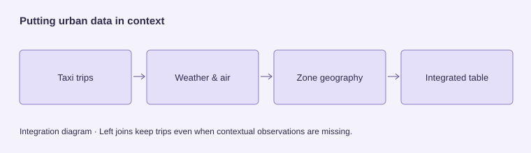
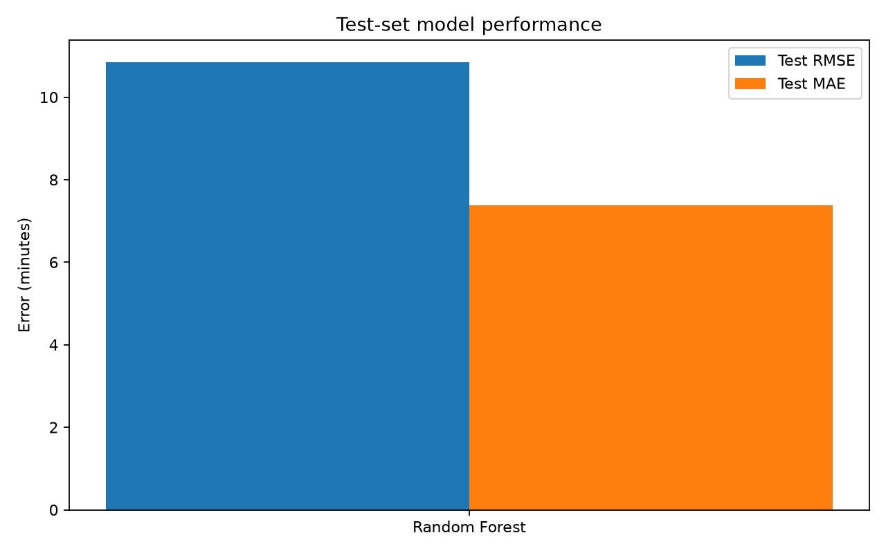

Urban data integration with Spark and Delta Lake
8,480,836 accepted taxi trips
Bringing trips, environmental observations and geography into a common analytical dataset.
The problem
Join taxi trips with environmental and geographic context.
My contribution
Coursework development with substantial ChatGPT assistance.
Result
A documented 8.48 million accepted trips and a measured storage comparison.
What I learned
A storage layout should fit the queries it actually serves.

Coursework context
This project formed part of a four-week assignment in Data-intensive Computing at KTH, the same course as my Flight Delay Analysis project. It extended my introduction to data engineering through a different workload: integrating urban datasets and examining storage choices.
Preserving meaning across sources
The pipeline brings together taxi trips, hourly weather, air quality and taxi-zone geography. Validated Bronze data is standardized into Silver tables before contextual joins produce an integrated Gold dataset. The repository records 8,480,836 accepted taxi trips.
Left joins preserve accepted trips when contextual observations are missing. Small reference tables are broadcast, and a selected air-quality monitoring site avoids multiplying trip rows through multiple station matches. That choice also limits how well the environmental data represents each pickup location.
Measuring the storage trade-off
The recorded benchmark compared year/month-partitioned and flat storage on the same taxi-trip table. Flat storage wrote in 8.9 seconds versus 30.5 seconds for the partitioned version; their sizes were almost identical at approximately 347 MB.
The required queries did not filter by year or month, so they could not benefit from partition pruning. Their recorded query times were close. This gives the project a useful engineering lesson: a storage strategy should be assessed against the queries it actually serves, rather than assumed to be faster because it uses partitions.
Development approach
I used substantial ChatGPT assistance during development. The project belongs to my coursework experience of building and working through a data pipeline, with particular attention to integration rules, data quality and performance trade-offs.
Relationship to Flight Delay Analysis
Flight Delay Analysis focuses on traceable batch processing and serving summaries to a dashboard. This project adds a complementary view of contextual integration, Delta storage and measured layout decisions.
What the later evaluations added
The week-two evaluation compared the same query with and without each optimization. Broadcasting the small zone lookup reduced elapsed time from 3.262 to 1.266 seconds; caching reduced it from 0.776 to 0.459 seconds. Outputs were checked for equality.
| Technique | Before | After | Recorded outcome |
|---|---|---|---|
| Broadcast join | 3.262 s | 1.266 s | 61% shorter elapsed time |
| Caching | 0.776 s | 0.459 s | 41% shorter elapsed time |
| Partition pruning | 0.706 s | 0.567 s | 20% shorter elapsed time |
| Adaptive query execution | 0.953 s | 1.161 s | Slower for this workload |
These are local coursework measurements on Spark 3.5.9 and Delta Lake 3.2.1, using the reported summary of runs two and three after excluding the first run. They are workload-specific timings, not general speedup guarantees.
Handling a second release
The Week 3 report records 517,165 incoming taxi rows processed in 104.352 seconds: 508,675 new trips inserted and all 8,490 intentionally copied duplicates rejected. A repeat of the same release inserts no additional records. Hash-based duplicate detection compensates for the absence of a stable taxi-trip identifier.
Monitoring records counts, validation failures, schema changes and elapsed time. Only explicitly allowed new fields are accepted; changed data triggers refreshes of dependent products. The later release is generated test data, kept separate from the original source, rather than a new observational dataset.
Why did partitioning not make every query faster?
The benchmark queries scanned the full table without filtering by year or month. They could not use partition pruning. Flat storage wrote faster in that run, while query times were close.
Predicting a trip using what is known at pickup
The final report extends the data platform into a reusable Spark ML pipeline for taxi-trip duration. It uses 8,955,246 labelled trips from a later dataset snapshot and splits them in time order: 70% for training, 15% for validation and 15% for testing. This keeps later trips out of the training split.
The useful design decision is what the model cannot see: dropoff time, fare, observed distance and final destination are excluded because they would not be available at pickup. Missing-value replacements are learned from training data only, and the fitted preprocessing steps are saved with the model.
The report compares 50.09 seconds from raw files with 35.19 seconds starting from the integrated Gold table. The inputs are not identical snapshots: Gold includes the incremental test release. The comparison illustrates avoided preparation work; it is not a controlled speedup benchmark.

The report’s linear baseline has a test mean absolute error of 7.63 minutes. Random Forest lowers that by 0.25 minutes, a modest gain. Both models struggle with long journeys when route and traffic information are missing. The stronger lesson is the reusable training process and careful control of information leakage.
Want to know more about the work?
I’m happy to discuss my contribution, the methods and what I learned.
Email me about this project ↗Browse selected work